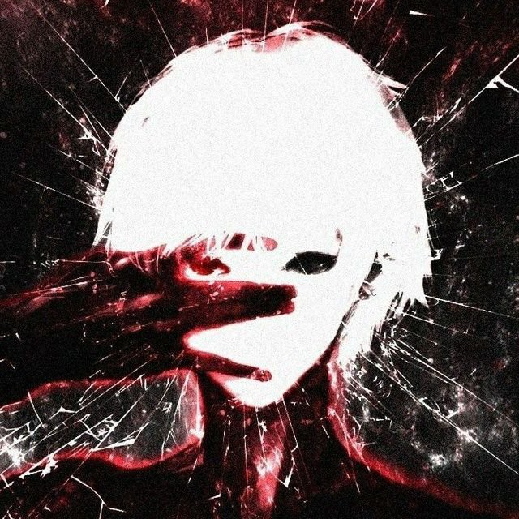
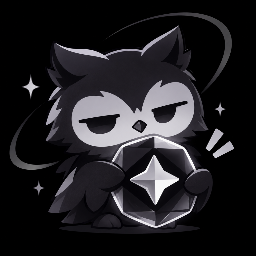

Coffe
@YungCoffe · GitHub
Status: indisponível.
SOBRE
Projetos públicos no GitHub.
ATIVIDADE NO DISCORD
Jogo: indisponível.
Spotify: indisponível.
5repositórios listados
3linguagens listadas
∞possibilidades
O QUE ESTÁ NO GITHUB
Projetos selecionados.
Cinco repositórios públicos, separados por categoria. Toque em um cartão para ver detalhes.
Status informados pelo criador.
AtivoEm andamentoPausadoConcluído
TECNOLOGIAS
Linguagens nos projetos.
Linguagens informadas para os repositórios listados. As barras mostram a quantidade de projetos, não nível de habilidade.
LINGUAGEM DE REPOSITÓRIOJavaScript3 de 5 projetos
LINGUAGEM DE REPOSITÓRIOHTML1 de 5 projetos
LINGUAGEM DE REPOSITÓRIOTypeScript1 de 5 projetos
MAIS SOBRE ESTE ESPAÇO
Conecte-se.
Encontre os projetos e compartilhe o perfil.

Noctis Utils e Automação SP #1K
Automatize Suas missões do Discord, personalize seu perfil tudo de graça e sem custo algum somente na Noctis, faça amigos e muito mais!
Membros: indisponível.
Entrar na comunidade ↗Interações
Curtidas e comentários indisponíveis: é necessária infraestrutura segura e controle de exclusão pelo dono.
Contador de visitas indisponível.